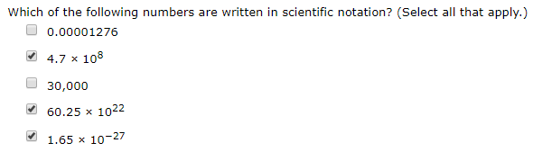

When it comes to test taking the most tried and true method is to always guess C. Even if you have no information then this beautiful strategy gives you 25% of available points. Anyone who has taken an SAT or ACT in their life knows this strategy all too well. This then begs the question if optimal guessing strategies can be applied to other types of questions.
For example in the case of a multi-select or select all that apply type of questions:

If you are in a time crunch situation on a test and have no information to go on,
what is the correct guessing strategy to maximize your expected average points?
The problem is that it is not as simple as a multiple-choice question. In your standard multiple-choice the question has N options, there is 1 correct answer, and you make 1 guess. With N options picking 1 correct answer with 1 random guess guarantees you 1/N points. However, there is more than just one variable in a multi-select question. It will have some number of options N, another number of correct answers C, and you have the ability to make multiple guesses G.
This then leads to a problem where N is not chosen by you but fixed by the test, C is going to be unknown, and you have to decide G. So then the question becomes based on N and different likely probability distributions of C, what should you choose G to be to maximize your expected points? That is what this attempts to find.
This follows the standard grading system for multi-select questions. For each correct answer marked correct you get part of the question's overall points. For each incorrect answer marked as correct you lose part of the question's overall points. Also, for the purpose of simplicity each question is assumed to be worth at maximum 1 point in total.
Back